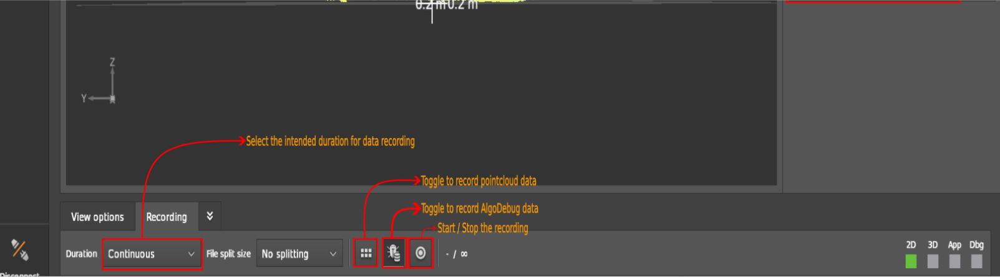

ODS Data Acquisition
This page explains what to record, when to record it, and how to create useful ODS datasets for analysis and support.
Purpose
Record data to:
Verify detection performance and system stability
Debug issues efficiently
Compare behavior before and after configuration or software changes
What to record
Record any unexpected or missing behavior, for example:
Incorrect detections (for example, wrong distance)
Missed detections
False positives (for example, dust)
If behavior is not as expected, record it.
Recording in ifm Vision Assistant
For technical support, record Algo Debug data. Algo Debug captures the information needed for deep analysis by ifm experts.
Note
On latest ifmVisionAssistant, Algo-Debug button is enabled by default.
Recording scope
Algo Debug datasets can grow quickly. Keep each recording short and focused.
Do not record while unrelated active issues exist (for example overtemperature or calibration errors)
Do not repeatedly record the same artifact unless new information is expected
Record only a short window around the event (a few seconds before and after)
For reproducible issues, start from a stationary vehicle and begin motion after a short delay
How to record in ifm Vision Assistant
Open
Monitorwindow.Select
Recordingin the bottom toolbar.Start recording shortly (~ 3 seconds) before the event and stop shortly after it(~ 3 seconds).
Replay the dataset and confirm that the issue is visible.

Before sending data to technical support, include:
What happened and what was expected
Environment conditions (for example sunlight, dust, temperature)
Reproduction steps
Occurrence frequency
Whether the issue is reproducible
Use clear file names and short notes to reduce analysis time.